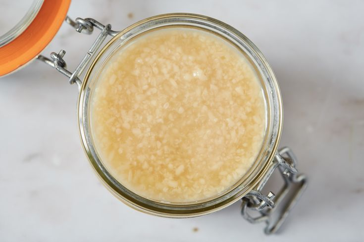

Shio Koji is a traditional Japanese seasoning made from Koji, sea salt and water. It naturally enhances flavor and tenderizes meat, fish and vegetables.
Perfect for marinades, sauces, soups and modern fermentation recipes while adding a rich natural umami taste.
🛒 Order on WhatsApp